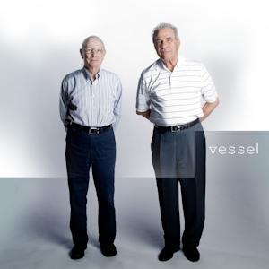
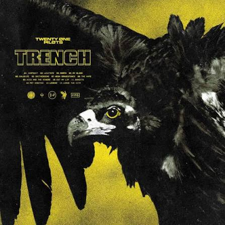
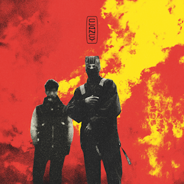

2. Blurryface (2015)
Their breakout album that reached #1 on the Billboard 200. Featuring massive hits like "Stressed Out" and "Ride", it introduced the conceptual character Blurryface, an alter-ego of the singer tyler.
A selection of key albums from Twenty One Pilots' discography.

The band's debut album featuring iconic tracks like "Car Radio" and "Holding on to You". This was the beginning of their career.
Their breakout album that reached #1 on the Billboard 200. Featuring massive hits like "Stressed Out" and "Ride", it introduced the conceptual character Blurryface, an alter-ego of the singer tyler.

An album detailing the story of the fictional city of Dema and the Banditos. Key singles include "Jumpsuit" and "My Blood".

The final chapter in the storyline that began with Blurryface. It features tracks like "Overcompensate" and "Navigating".